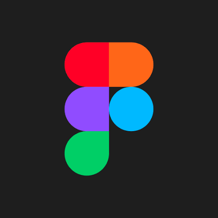
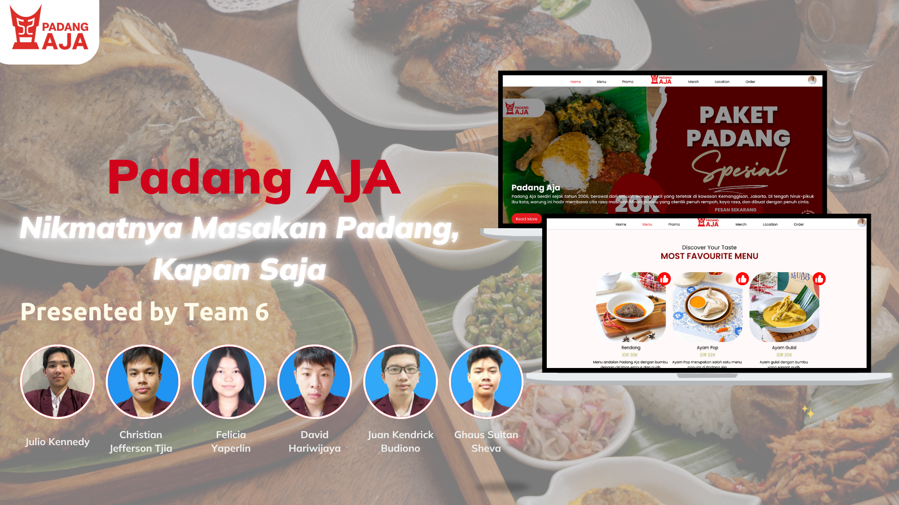
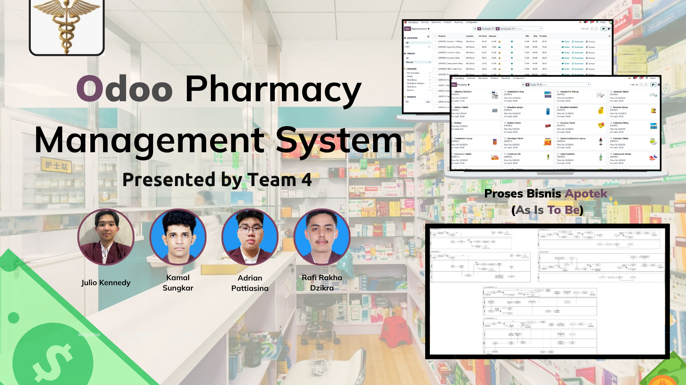
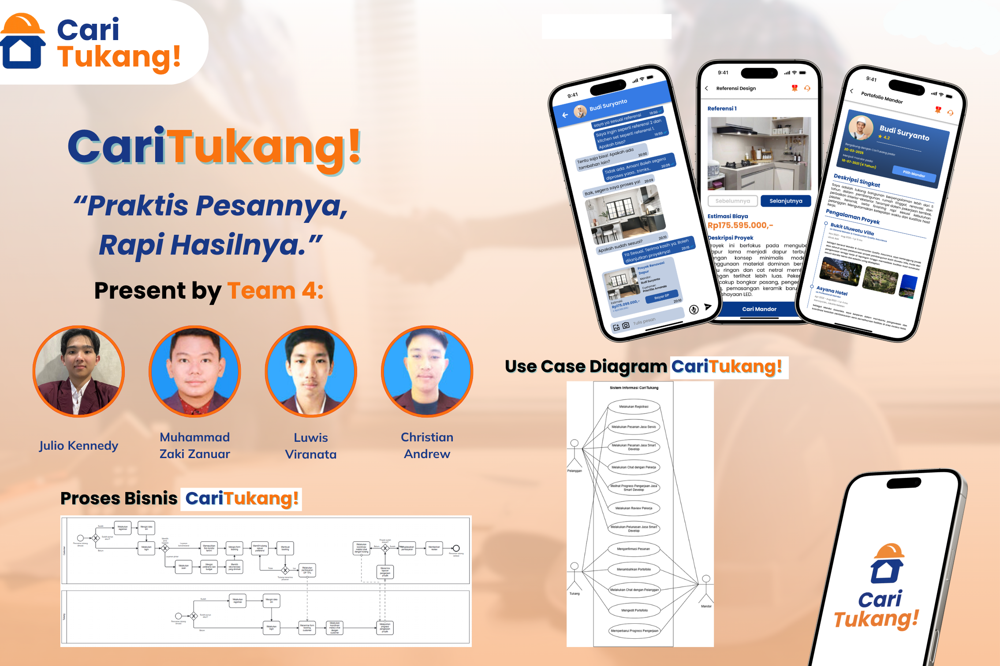

Ready For Work
Bridging Business & Technology to Drive Impact
Information Systems Student in Binus University
Starting from the understanding that technology is not just about coding, but a tool for achieving business goals. I build digital solutions that are not only technically reliable, but also aligned with the company's strategy to create meaningful impact.


As an Information Systems student, I have a strong enthusiasm for continuously learning and developing myself. With good time management, discipline, and perseverance, I am able to face various challenges and adapt to the ever-evolving technology landscape. I am committed to enhancing my knowledge and skills while preparing myself to thrive in an increasingly competitive professional environment.
PROJECT
PadangAJA Platform
PadangAJA Platform Description
PadangAJA is a website that provides a modern online dining experience for customers of a Minang restaurant. It allows customers to browse menus and promotions, reserve tables, order food in advance, and purchase exclusive merchandise. It also features Smart Assist, an AI chatbot for personalized recommendations and instant menu, price, and promotion information. Through its reservation, pre order, payment, review, loyalty points, and customer history features, PadangAJA aims to make the dining experience more practical, personalized, and efficient while maintaining the restaurant’s authentic Minang identity.


Coffee Shop Sales Performance Dashboard
Coffee Shop Sales Performance Dashboard Description
Coffee Shop Sales Performance Dashboard is a dashboard that has been created from raw coffee shop data, such as transaction dates, total transactions, and sales. The dashboard provides insights into total sales, total transactions, revenue per unit, top selling products, sales by product category, sales quantity, and sales trends over time. Interactive filters for product category, purchase type, and buyer type allow users to explore the data based on different customer segments. The dashboard is designed to help users understand sales performance and identify product and category trends for better business decision making.

Odoo Pharmacy Management System
Odoo Pharmacy Management System Description
The Odoo Pharmacy Management System is a system that we built and configured in Odoo for a pharmacy. The system integrates several Odoo modules, including Accounting, Point of Sales (POS), Inventory, Purchase, Appointment, Calendar, and Sales, to support the pharmacy’s daily operations. The system covers product and stock management, purchasing and replenishment, sales transactions, financial management, and doctor consultation scheduling and payments. By integrating these processes into one system, the project aims to improve operational efficiency, provide real time stock monitoring, reduce manual errors, and simplify reporting.

CARITUKANG APPLICATION
CariTukang Application Description
CariTukang is a mobile application that connects customers with trusted construction and home service workers for various services, such as electrical repairs, renovations, and AC servicing. It also features Smart Develop, an AI powered tool that helps users plan construction or renovation projects by analyzing the building condition, providing design references, budget and duration estimates, and suitable foreman recommendations. Through its marketplace, portfolios, ratings, chat, payment, and progress monitoring features, CariTukang aims to make construction services more structured, transparent, and efficient.

CRIME MONITORING DASHBOARD
Crime Monitoring Dashboard Description
Crime Monitoring Dashboard is a dashboard that has been created from 2024 Electronic Police Report data from New Orleans, containing information such as crime type, district, location, and other relevant crime information. The dashboard provides insights into total police reports, most common crime types, crime trends over time, cases by district, cases by disposition, and crime distribution across districts and months. Interactive filters for month, district, and disposition allow users to explore crime patterns from different perspectives. This helps users understand crime trends, identify areas with higher numbers of reported cases, and gain a clearer overview of public safety conditions.

Certificates
Azure AI Basic Fundamentals
Microsoft x Komdigi x GreatNusa
Certificate of Completion · March 2025
Microsoft AI-900T00-A Belajar AI dari Dasar
Microsoft x GreatNusa
Certificate of Completion · February 2026Dean's List in School of Information Systems BINUS University
BINUS University x School of Information Systems
Dean's List Certificate · March 2026
SIS Excellence Award 2026
BINUS University x SchoolISBINUS
Certificate of Appreciation · February 2026
Dedicated Assistant Even Term 2025 2026 Binus University
BINUS University x SchoolISBINUS
Dedicated Assistant Certificate . September 2026
Let’s Create
Something That
Matters
Whether it’s a new idea or a complex challenge, let’s explore what we can create together.